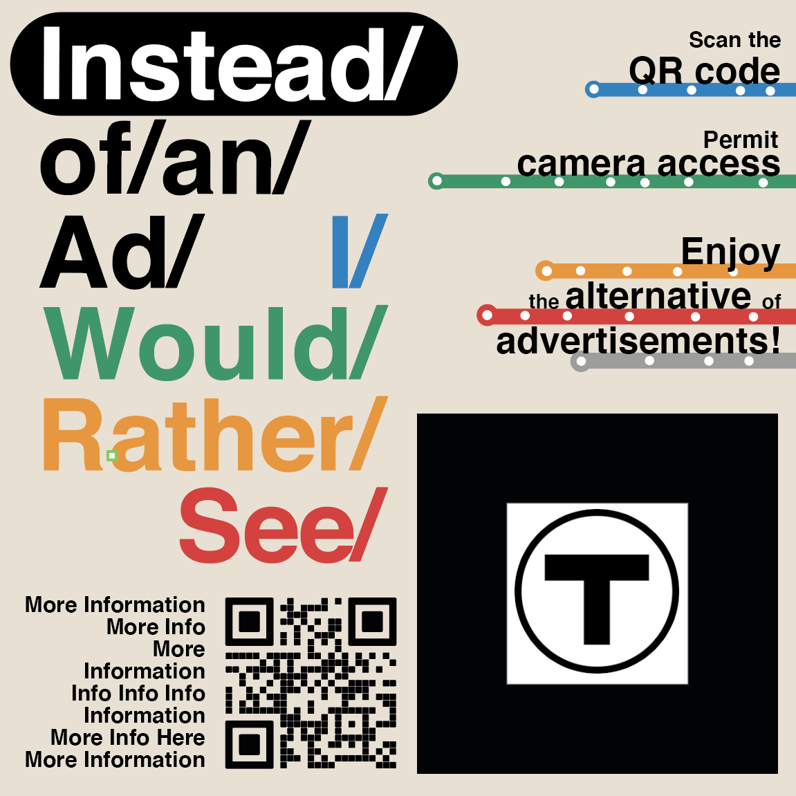
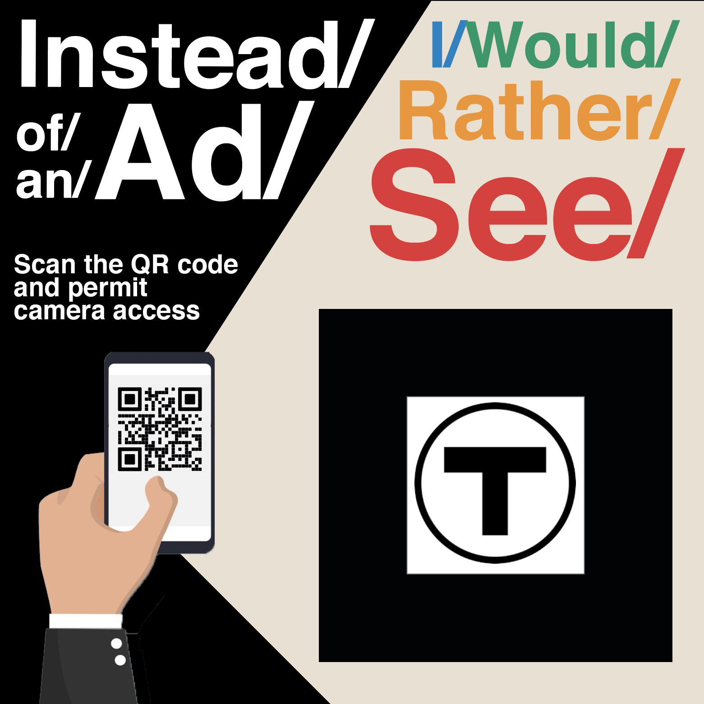
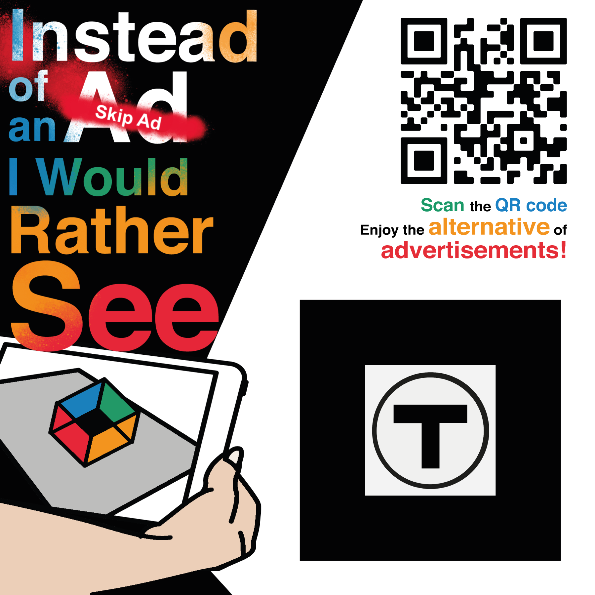

some text some text some text some text some text some text some text some text some text some text
Section II. Technology & Techniques
This project adopted
AR.js and
Three.js to implement the web AR technology.
Further implementation includes
- Tracking multiple markers at the same time and determining images/models' dimensions based on the distance between the markers.
- Smoothening the deformation of the artworks when the camera is moving/shaking;
- Improvements on the flickering issue using lerp
- Improvements on the stableness of marker detecting
TODO:
- Find the artwork whose length & width match the dimensions of the gap between two markers.
Section III. Stickers on the Streets!
version #1
version #2
version #3
final version
Different versions of the sticker design. The goal is to make it deceptive enough so that it might not be so easily removed by the staff, but keep the aesthetics special and stylish.
The T icon, with its black border, is used as a marker to be tracked by the user's camera (hence it has to be big and clear). The QR code in the up right corner leads users to the website's camera (AR tracking) page.
Section IV. Participation & Opencalls
some text some text some text some text some text some text some text some text some text some text
some text some text some text some text some text some text some text some text some text some text some text some text some text